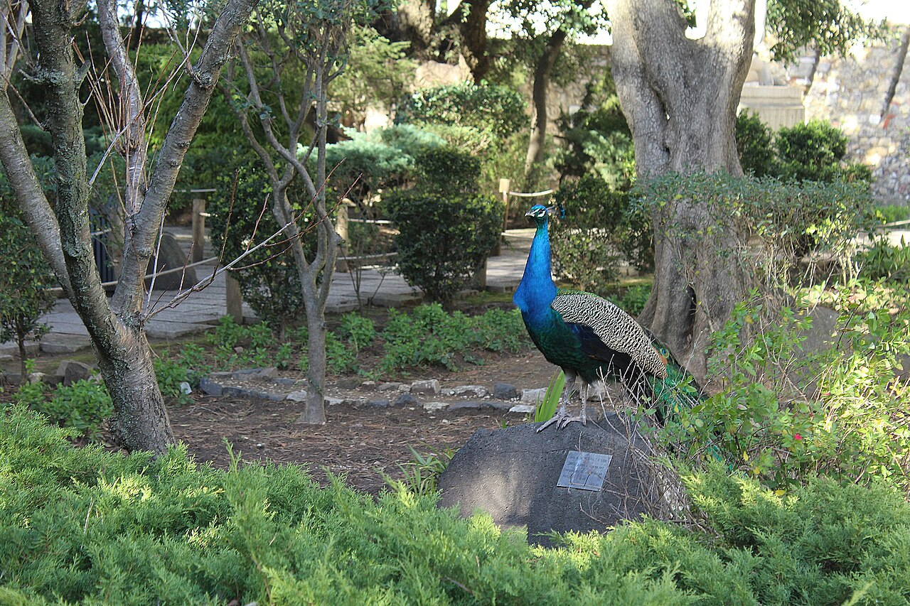
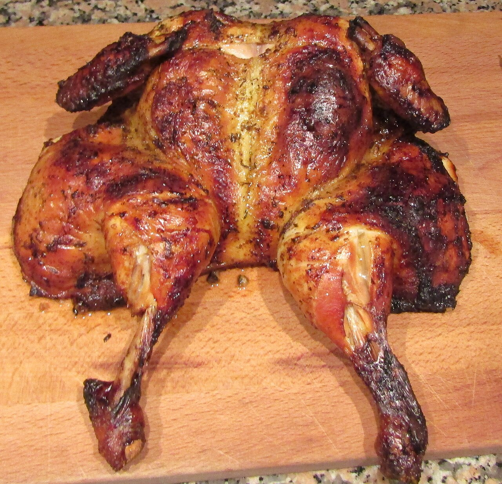
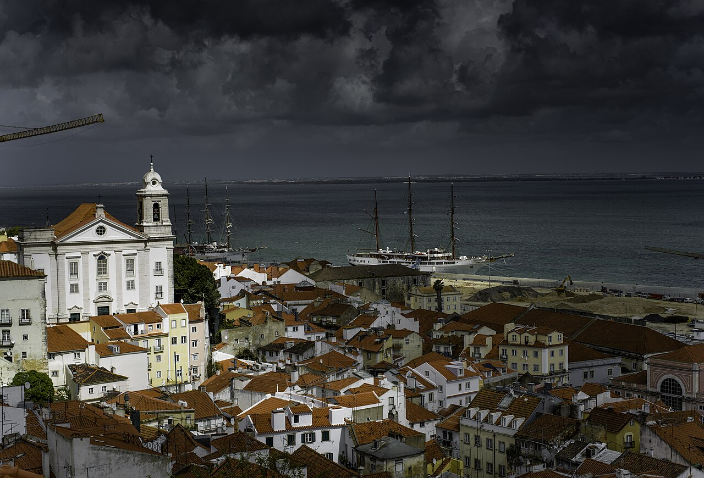
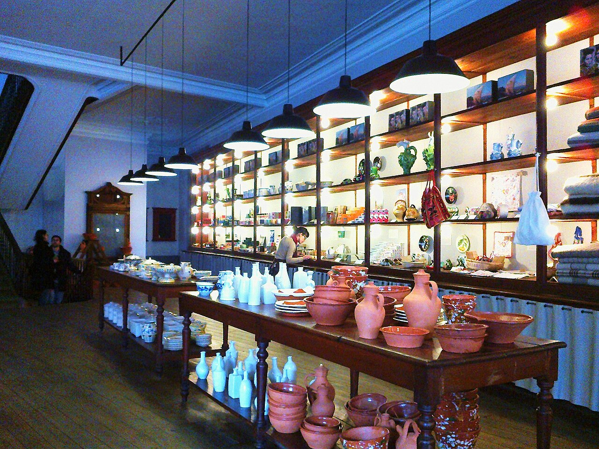

Lisbon · Day 1 of 2 · Castle & aquarium
Castle & Aquarium
A tight, kid-paced day in the city: leave by ten, up to the Moorish castle for the morning, an easy lunch in the old town, the great aquarium in the afternoon — and back over the bridge by four, before anyone melts.
The day — one castle, one aquarium, home by four

Castelo de São Jorge
a castle to roam — not a maze to march
Straight up to the castle, and nothing else in Alfama: that keeps the morning to one contained place the kids can actually run, instead of the steep tourist maze. Ramparts and cannon to climb, peacocks in the gardens, a camera obscura, and the widest view in the city — an hour and a half of roaming before the heat builds.

- The ramparts & camera obscuraWalls and towers to climb, cannon to clamber on, and a periscope that pans live over the city.
- Peacocks & the gardens KidsShaded paths and lawns where the 1, 3 and 4-year-olds can just be let loose.
Lunch on the way out
easy lunch — and the Portuguese-goods browse you wanted, two doors on
Down off the hill for a proper sit-down before the drive across town — somewhere gentle for the kids and not all fish. A family-run Mozambican kitchen for the pick, a cosy café for the simplest version, or the castle-side terrace if you mostly want the view.


- Cantinho do Aziz Our pickA 35-year Mozambican kitchen in Mouraria, just north of the castle and on the way to the aquarium — roast chicken, mild curries and bread the kids will actually eat. Family-run and gentle. Book ahead.
- Pois Café EasiestA cosy, sofa-strewn café by the Sé on the walk down — soups, sandwiches, salads and good cake. Walk-in and low-key, the simplest call with five littles.
- Chapitô à Mesa For the viewA terrace over the whole city at a circus school, where the kids can watch acrobats train — go for the setting more than the menu, which leans Portuguese and a touch seafood-y.

A Vida Portuguesa After lunchThe one you wanted — and its big Intendente store is two minutes from Aziz, right on the way to the car: soaps, tinned fish, Bordallo ceramics, notebooks. A 15-minute browse. (The Chiado flagship is also on Day 2.)
The aquarium, then the bridge
Parque das Nações — and the way home
Across the city to the modern riverfront and the best thing in Lisbon for kids: the Oceanário, built around one enormous central tank you circle twice, high and low. Best of all, Parque das Nações sits right at the foot of the Vasco da Gama bridge — so the moment you're done, you're already pointed home.


- Oceanário de Lisboa Book ~2pmReserve a 2pm slot so you walk straight in — with the four o'clock exit, it's the squeeze of the day. ~1.5 focused hours around the great tank.
 Telecabine If timeA short riverside cable-car ride — only if the kids still have steam and the clock allows.
Telecabine If timeA short riverside cable-car ride — only if the kids still have steam and the clock allows.